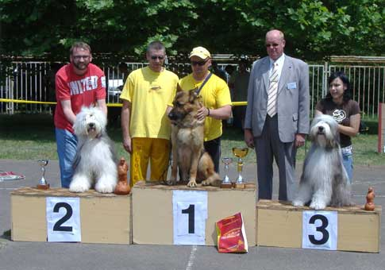
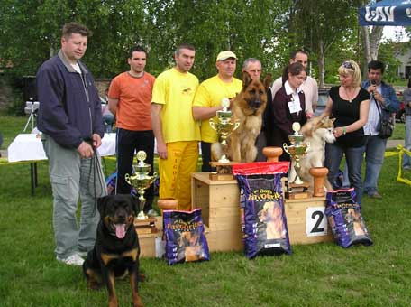
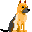
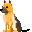

CAC Kikinda 31.05.2008.


CH Ursus Nivalda - razred šampiona - V1, CAC, BOB, BOG
Sudija: Dušan Rodić
Ursus je proglašen za najuspešnijeg psa Kinološkog društva "Kikinda" !!!!
CACIB Subotica - 25.05.2008.
CH Ursus Nivalda - Razred šampiona - V1, CAC, CACIB-Sudija: Firic Peter
Honey V. Pannonia Wolf - Razred radnih - V1, CAC, BOS
Boss Bemiki - Razred zrelih - V1, CAC
CAC Novi Kneževac 11.05.2008.

CH Ursus Nivalda - Razred šampiona - V1, CAC, BOB, BOG, BIS!!!
Sudija: Nebojša Savičić and Miloš Veselinov for BIS
Honey V. Pannonia Wolf - Razred radnih - V1, CAC, BOS
Boss Bemiki - Razred zrelih - V1, CAC
CACIB Odžaci 26.04.2008.
CH Ursus Nivalda - Razred šampiona - V1, CAC, CACIB, BOS
Sudija: Josip Novak (HR)
Boss Bemiki - Razred zrelih - V1, CAC, R.CACIB
CAC Novi Sad 06.04.2008.
CH Ursus Nivalda u razredu šampiona osvojio je V1, CAC i BOS. Sudija: Sunčica Lazić.
04.04.2008.
 NOVO LEGLO!!!
Kira Aus Wojwodina x Kevin V. Pannonia Wolf
1 mužjak + 2 ženke
CAC Kanjiža 30.03.2008.
CH Ursus Nivalda je izlagan u razredu šampiona.
Kod sudije Zoltana Vataija osvojio je V1, CAC i BOS.
03.03.2008.
NOVO LEGLO!!!
Anči Bemiki x Carly Belissimo
2 mužjaka + 5 ženki
01.02.2008.
NOVO LEGLO!!!
Oštenjene su 4 ženke iz kombinacije:
CH Honey V. Pannonia Wolf x INT CH Ursus Nivalda